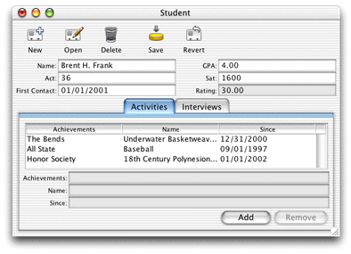
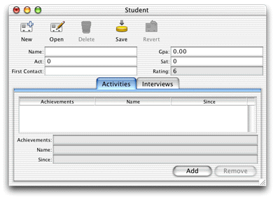
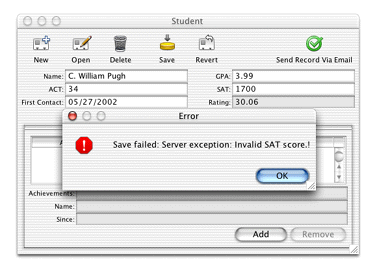

You now need to add a method for the new property you added
in Assistant. The new rating attribute
in the Student entity is designed to aggregate ACT and SAT scores
and GPAs into a numeric rating based on how each of those attributes
is weighted. You need to add a method to perform the calculation,
a method to invoke the calculation, and class constants to define
the weighting.
The algorithm used to calculate the rating is "sensitive" business logic, so it should exist only on the server side. The client business logic class simply invokes the concrete implementations of the rating methods on the server side.
Add these class constants to the server-side Student.java file:
private static final double ACT_WEIGHT = 0.30; private static final double SAT_WEIGHT = 0.30; private static final double GPA_WEIGHT = 0.40;
Add this method to the server-side Student.java file:
public Number rating() {
float aggregate = 0;
float satTemp;
float actTemp;
float gpaTemp;
if (sat() != null && act() != null && gpa() !=null) {
satTemp = sat().floatValue() / 1600;
actTemp = act().floatValue() / 36;
gpaTemp = gpa().floatValue() / 4;
aggregate = (float)(((gpaTemp * GPA_WEIGHT) + (actTemp + ACT_WEIGHT)
+ (satTemp + SAT_WEIGHT)) * 10);
}
return (new Float(aggregate));
}
Add a method called clientSideRequestRating in
the server-side Student.java file
that invokes the rating method, as shown:
public Number clientSideRequestRating() {
return rating();
}
Add this code to client-side Student.java file
to invoke the remote method:
public Number rating() {
return (Number)(invokeRemoteMethod("clientSideRequestRating", null,
null));
}
In the last section, you bound the association aspect of the
EOTextFieldController (rating) to a method called rating in
the client-side business logic class. You've just defined this method,
so now whenever the rating property needs a value, the rating method
is invoked. It's that easy—Java Client handles all the communication
between the business logic and the user interface for you.
There is more going on behind the scenes, though. The rating in
the client-side business logic class invokes a remote method called clientSideRequestRating in
the server-side business logic class. This method in turn invokes
a method called rating, which actually performs
the calculation.
Rebuild and run the application. Make a new student record and see how the rating field is populated upon saving as shown in Figure 5-16.
Note: Whenever rating is
requested, a round trip to the server is made to perform the remote
method invocation. To lessen network traffic, you should consider caching
the value in the client-side enterprise object. |
Figure 5-16 The rating field in action
WebObjects provides some useful classes and methods to validate
user input. You should validate the entered data for each of the
three score fields. To do this, add the following code in the server-side Student.java class:
public Number validateSat(Number score) throws NSValidation.ValidationException {
if ((score.intValue() > 1600) || (score.intValue() < 0)) {
throw new NSValidation.ValidationException("Invalid SAT score.");
}
else
return score;
}
public Number validateAct(Number score) throws NSValidation.ValidationException {
if ((score.intValue() > 36) || (score.intValue() < 0)) {
throw new NSValidation.ValidationException("Invalid ACT score.");
}
else
return score;
}
public Number validateGpa(Number score) throws NSValidation.ValidationException {
if ((score.floatValue() > 4.0) || (score.floatValue() < 0.0)) {
throw new NSValidation.ValidationException("Invalid GPA.");
}
else
return score;
}
The code you added is rather trivial, but it demonstrates
a particularly powerful feature of WebObjects—validation. The
NSValidation class in the Foundation framework provides this functionality.
By throwing an NSValidation.ValidationException,
a method tells Enterprise Objects that the current object graph
is not cleared to be saved to the database.
In this case, if one of the attributes fails to validate, the object graph is not cleared by NSValidation and the current record won't be committed to the data store until a valid value is entered.
You were instructed to put all the validation methods in the server-side business logic class, but this is not necessary. In fact, it often makes more sense to validate some values on the client. This reduces network traffic (there is no round-trip to the server to perform the validation) and increases overall application performance. Experiment with this by moving one of the validation methods to the client-side business logic class.
Validation methods are of the form validateAttribute.
In this example, be sure that validateGpa is
capitalized correctly—validateGPA will
not invoke validation on the gpa attribute.
If you write validation methods, they are invoked in the framework by various classes and interfaces such as EOValidation, EODisplayGroup, and EOEditingContext. Validation is performed for these activities:
validateForUpdate)validateForSave)validateForDelete)validateForInsert)validateForUpdate)When you create a new record, it would be nice to supply some
default values for the fields in that record. Although none of the
fields in the Student record really need a default value, you'll
override awakeFromInsertion in order to
learn how to give a field a default value.
Add this code in the server-side Student.java file:
public void awakeFromInsertion(EOEditingContext context) {
super.awakeFromInsertion(context);
if (gpa() == null) {
setGpa(new BigDecimal("0"));
}
if (sat() == null) {
setSat(new BigDecimal("0"));
}
if (act() == null) {
setAct(new BigDecimal("0"));
}
if (name() == null) {
setName("");
}
}
Build and run the application and create a new student record. You'll notice that some of the fields are populated in the new record as shown in Figure 5-17.
Figure 5-17 Initial values
Also try entering some invalid data to see how the validation you implemented works. If you enter an invalid score, you should get a validation exception message when saving, as shown in Figure 5-18.
Figure 5-18 Validation exception message
